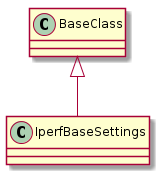
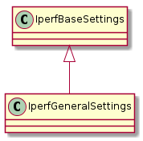
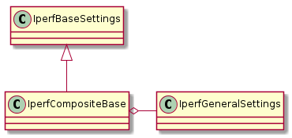
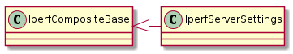
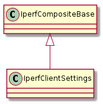

Warning
To make it more transparent these settings don’t assume any overridden defaults. If you don’t set any of them the iperf defaults are used. This way, hopefully, referring to the man page should be enough for the user to know what the code is doing.
The two classes that are meant to be used directly are the Iperf Server Settings and the Iperf Client Settings, the other classes are support for those two classes. There are three ways to set their parameters:
- pass them in to the constructor
- set them (e.g.
config.interval = 1)- pass in a dictionary of attribute-name:value pairs to the
updatemethod
My original thinking was that the constructor would be the main way to set things up and then updates and changes could be made by assigning to the attributes, but once I started trying to integrate it and set the classes up using ConfigParser I realised that it would be difficult so the update method is intended to be the main way to set up the configurations.
Once the configuration is set up, the intended way to use it is by casting it to a string. If you have a paramiko-like connection to each host you could do something like:
# I'll show all three ways to set the properties
# in practice it might not make sense to use all of them
server = IperfServerSettings(daemon=True)
client = IperfClientSettings()
client.update({'interval':1, 'time':60, 'parallel':4})
client.server = '192.168.20.103'
serverin, serverout, servererr = dut.exec_command('iperf {0}'.format(server))
clientin, clientout, clienterror = target.exec_command('iperf {0}'.format(client))
for line in clientout:
print clientout
A place for common constants.
This is the base class for all the settings.

IperfBaseSettings |
|
IperfBaseSettings.set_boolean |
|
IperfBaseSettings.set_number |
|
IperfBaseSettings.set_bytes |
The constants are exploding so I’ll start breaking them apart instead of using the one IperfConstants class.
This is to hold the settings common to both the client and server (See the General Options section in the iperf man page).

IperfGeneralSettings |
|
IperfGeneralSettings.format |
|
IperfGeneralSettings.interval |
|
IperfGeneralSettings.len |
|
IperfGeneralSettings.print_mss |
|
IperfGeneralSettings.output |
|
IperfGeneralSettings.port |
|
IperfGeneralSettings.udp |
|
IperfGeneralSettings.window |
|
IperfGeneralSettings.compatibility |
|
IperfGeneralSettings.mss |
|
IperfGeneralSettings.nodelay |
|
IperfGeneralSettings.version |
|
IperfGeneralSettings.IPv6Version |
|
IperfGeneralSettings.reportexclude |
|
IperfGeneralSettings.reportstyle |
|
IperfGeneralSettings.update |
A base-class for the client and server settings specifically.

IperfCompositeBase |
|
IperfCompositeBase.prefix |
|
IperfCompositeBase.set |
|
IperfCompositeBase.get |
|
IperfCompositeBase.update |
|
IperfCompositeBase.__str__ |
The server-side settings – see Server Specific Options in the iperf man page.

IperfServerSettings |
|
IperfServerSettings.prefix |
|
IperfServerSettings.daemon |
|
IperfServerSettings.single_udp |
Constants for the client (mostly to try and get rid of my spelling errors).
class IperfClientConstants(object):
"""
Constants for the IperfClientSettings
"""
__slots__ = ()
options = ('udp', 'bandwidth', 'dualtest', 'num', 'tradeoff', 'time', 'fileinput',
'stdin', 'listenport', 'parallel', 'ttl')
# attributes
bandwidth = '_bandwidth'
num = '_num'
tradeoff = '_tradeoff'
time = '_time'
stdin = '_stdin'
listenport = '_listenport'
parallel = '_parallel'
ttl = '_ttl'
The client-side options – see Client Specific Options in the iperf man page.

IperfClientSettings |
|
IperfClientSettings.prefix |
|
IperfClientSettings.server |
|
IperfClientSettings.bandwidth |
|
IperfClientSettings.dualtest |
|
IperfClientSettings.num |
|
IperfClientSettings.tradeoff |
|
IperfClientSettings.time |
|
IperfClientSettings.fileinput |
|
IperfClientSettings.stdin |
|
IperfClientSettings.listenport |
|
IperfClientSettings.parallel |
|
IperfClientSettings.ttl |
|
IperfClientSettings.linux_congestion |
|
IperfClientSettings.__str__ |